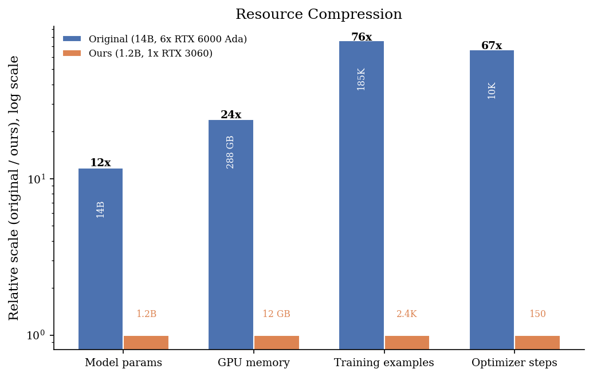
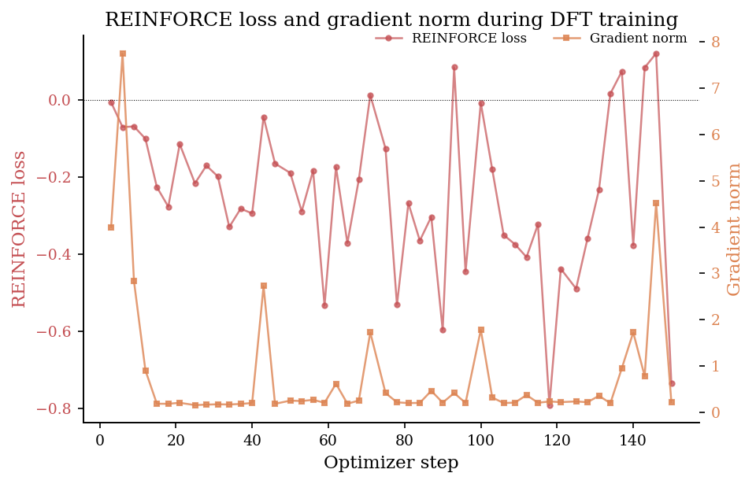
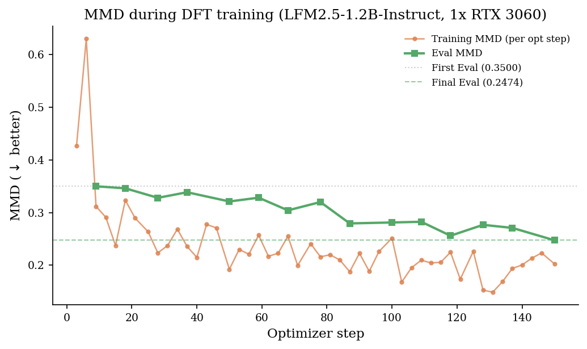

Distribution Fine-Tuning on a Budget
July 2026 • Reading Time: 10 Minutes
Contemporary language models generate text that is plausible on the token-level yet tending towards homogeneity when viewed as a whole.
Supervised fine-tuning further adapts the per-token likelihoods while providing no mechanism for shaping or controlling the statistics of
an output distribution across all the tokens that make it up. This leaves room for the model to learn to produce text with identifiable stylistic
fingerprints, which can manifest as distinct sentence rhythms, overused transitions, or narrow sets of vocabulary choices, even as the
per-token accuracy becomes indistinguishable from human-written reference.
In order to replace the per-token likelihood objective with a more global, distributional one, Rosmine proposed Distribution Fine-Tuning (DFT) \cite{rosmine2026dft}.
It optimizes the Maximum Mean Discrepancy (MMD) \cite{gretton2012kernel} between the model's output distribution and a reference corpus of human text,
using a kernel-based estimator that assigns per-sample rewards in a REINFORCE \cite{williams1992reinforce} loop. On a 14B model, DFT improved MMD by $49\%$
and raised judge-model win rates against human text from $24\%$ (SFT) to $40\%^1$, with a 164% improvement in creativity scores \cite{rosmine2026dft}. I highly recommend
reading Rosmine's post.
$^1$ The original post states its headline results as MMD and JMQ scores directly ($\footnotesize{0.018}$ vs. $\footnotesize{0.037}$ MMD, $\footnotesize{0.80}$ vs. $\footnotesize{0.49}$ JMQ for the 14B model), not as win-rate percentages. The $\footnotesize{40\%}$ / $\footnotesize{24\%}$ win-rate figures used here follow from the post's own definition \cite{rosmine2026dft}, $\footnotesize{JMQ = 2 \times \text{win rate}}$, applied to those two JMQ values. They are not directly quoted, though they agree with the post's separately stated "JMQ improved by $\footnotesize{63\%}$" to within rounding.
The original DFT was performed on six RTX 6000 Ada GPUs with additional cloud H100s reserved for the SFT full-fine-tuning baseline and a dedicated 8B embedding model running alongside the policy. My question became whether this scale would be a hard requirement. This post documents a reproduction of DFT under resource constraints that differ by orders of magnitude: a single RTX 3060, a 1.2B model, no dedicated embedding model and approximately 2,400 training examples from RefinedWeb. After some debugging, my pipeline ultimately ended up producing measurable distributional improvements despite the imposed severe resource compression.

Relative Scales of applied resource budgets for my DFT run
Distribution Fine-Tuning
Standard SFT maximizes the log-likelihood of each fine-tuning token. The objective depends only on the probability assigned to the observed next token, not
on how a set of sampled tokens then relates to some reference set overall. Two models with identical per-token perplexity on held-out data can therefore
produce output populations with noticably different global statistics, expressed e.g. through different n-gram frequencies, different rates and kinds of
structural repetition, different topical keyword distributions, or just an inflationary use of em dashes.
DFT replaces the local, purely token-level objective with a higher-level distributional one. At each training step, the policy samples a batch of completions, embeds them alongside a fixed
reference pool of human-written text, and computes a per-sample reward derived from the kernel structure of the joint embedding set. For a generated
sample $i$ against $n-1$ other generations and $m$ reference samples, under an RBF kernel $k$, a reward can be formulated like so:
$$r_i = \frac{2}{n-1}\sum_{j \neq i} k(x_i, x_j) - \frac{2}{m}\sum_{l} k(x_i, y_l)$$
This is twice the contribution of sample $i$ to an unbiased estimator of $\text{MMD}^2(P_\theta, P_\text{ref})$. Despite the name, reward $r_i$ functions
as a cost in the usual RL sense. The REINFORCE training loss is $\mathbb{E}[r_i \cdot \log \pi_\theta(x_i)]$, meaning that a higher $r_i$ pushes
log-probability down. A high $r_i$ is caused by high redundancy with other outputs of the model, which is the so-called within-batch similarity. On the other hand,
a low $r_i$ implies a high similarity to the human-written reference pool.
In other words, this multi-purpose reward signal enables penalizing mode collapse (the redundant generations) as well as off-target drift (generations far
from reference) while reinforcing the generation of those texts that are simultaneously novel relative to the model and similar relative to the
human-written reference.
For each prompt in a batch, the policy samples a small group
of completions. Every completion in that group, together with a fixed pool of reference human text, is embedded and run through the RBF kernel to produce
one $r_i$ per generated sample via the above formula. These rewards are then used directly as the per-sample weight in the REINFORCE loss, and a single
backward pass updates the LoRA adapters before the next batch of prompts is drawn.
The original DFT utilizes $\approx 185\text{K}$ FineWeb documents at 4B to 14B model scale \cite{rosmine2026dft}. It uses a dedicated Llama-Embed-Nemotron-8B for embeddings,
and trains via a sequence of merged LoRA adapters in a ReLoRA \cite{lialin2023relora}-style schedule. The batch size, accumulation steps, and evaluation
cadence are all calibrated for a multi-GPU cluster.
Small, Smaller, Substitutions
Imposing the hardware budget of a single RTX 3060 requires rethinking most of the original recipe. At the same time, the underlying mechanism and
objective of DFT should survive each substitution as intact as possible.
The original uses relatively standard decoder-only Qwen3 transformer policy models. I substitute LFM2.5-1.2B-Instruct for its smaller parameter
count and relatively high information density. It gets loaded in NF4 precision with double quantization \cite{dettmers2023qlora}. I chose
LoRA \cite{hu2021lora} adapters of rank 64 on attention and MLP/FFN projections and enabled gradient checkpointing.
While the original used Llama-Embed-Nemotron-8B, it is not viable to run any separate embedding model alongside the policy on a single card. Small
embedding models exist, but they to me seemed too restricted in their expressiveness. Instead, I compute embeddings directly from the frozen policy
model itself, with its LoRA adapter disabled accordingly. Hidden states from three layers, first, middle, and last, are mean-pooled and concatenated
into a 6144-dimensional embedding vector, with the main idea being that these layers could help in capturing representations of different degrees of
abstraction and granularity in their meaning. Every forward pass for embedding extraction runs one sequence at a time. Batching is not used, which will become clear later.
Training on 185K documents at 4B to 14B policy model scale translates to roughly two to three thousand examples at 1.2B scale given the same per-sample
compute budget. While the original draws from FineWeb \cite{penedo2024fineweb}, I substituted RefinedWeb \cite{penedo2023refinedweb} for this
reproduction and used $\approx 2400$ training examples from it, with a held-out validation set of $127$ completions.
Multi-GPU training comes with support for large effective batches and thousands of optimizer steps. Our effective batch size is 32 (one device, two
generations per prompt, sixteen gradient accumulation steps), yielding approximately $150$ optimizer steps over the full dataset. This compression of
the step budget by roughly two orders of magnitude makes several default hyperparameter choices actively misleading. The effective batch size
became 32, yielding approximately 150 optimizer steps over $2400$ training examples, with a cosine learning rate schedule with warmup and EMA decay
recalibrated to the step budget.

Loss and gradient norm dynamics for DFT during training
Encountering New Failure Modes
The model substitution was not as straightforward as I had hoped, the reason being that LFM2.5 is not a conventional decoder-only transformer.
It interleaves six grouped-query attention blocks with ten short-range gated 1D convolutions, which themselves provide increased processing
efficiency at the cost of a reduced global receptive field. This is typical practice with the broader Mamba \cite{gu2023mamba} and SSM-hybrid
architecture family.
Batched autoregressive generation conventionally pads the shorter sequences and relies on the attention mask to make padding invisible.
The mask prevents any real token from attending to a padded position. Such a guarantee does not extend to convolutions. A 1D convolution
at position $t$ mixes hidden states at positions $[t-1,\ t,\ t+1]$ unconditionally. The attention mask merely governs what a position
may attend to, not what a neighboring position's convolution is permitted to consume. A pad-token leading the first real token is not
invisible to that first real token's convolution, but becomes just another input to it.
A single corrupted activation at the pad-to-real boundary, injected once in a mostly-attention network, would cause only minor perturbation.
The next attention layer's mask would step in and just prevent further contamination. However, in a network where ten of sixteen blocks are
convolutional, the corruption is re-injected at every convolutional block and re-mixed with an expanding span of neighboring positions at
each pass through the residual stream. Reaching the output layer, the hidden state at the first generated position is a nontrivial mixture
of padding and content, and every subsequent autoregressive step conditions on that corrupted state. Padding gets attributed informational
contribution while there explicitly shouldn't be any, which in turn distorts and misleads training efforts.
After concluding such a buggy run, some prompts would generate fluent, on-topic text, while others produced pure repeated-token degeneration,
with no legible pattern across prompts. Padding the same prompt to different lengths reproduced the split deterministically. Valid output at
the prompt's natural length, degenerate output at a fixed $768$-token pad target. This initially appeared to just be noise, but it really was
not. I fixed this pragmatically by eliminating padding through generating one sequence at a time, i.e. batch size $1$. Critically, this must
apply to every forward pass through the model, not only the visibly generative ones. The embedding extraction forward passes used to compute
MMD, which nicely but catastrophically batched multiple reference and generated texts together with dynamic padding, were the last instance of
this bug discovered, precisely because they were just not an obvious suspect. Take this as the broader lesson, but every forward pass through
the model deserves equal scrutiny.
Measurement Infrastructure
Eval MMD bounced with no visible trend across complete training runs, which to me was a pattern indistinguishable from a model that was not
learning. The instability in fact had two compounding causes. The RBF kernel bandwidth was re-estimated via the median heuristic on every
evaluation call from a small batch of approximately $50$-$75$ samples, so the metric's own scale shifted between measurements independent of
any change in the model.
The reference side of the comparison used only the small validation split rather than the larger, fixed pool used for training rewards.
Fixing both, i.e. computing the bandwidth once from the full $512$-sample pool and freezing it, and reusing that same pool as the evaluation
reference, turned a flat, noisy trace into a monotonic reduction in MMD of $\approx 30\%$ over the run. There were more bugs like this, so
establishing that the metric was stable enough to resolve the effect size of interest, before adjusting learning rate, reward shape, or
any other hyperparameter, would have saved debugging time, but the observed symptoms truthfully looked to be caused by the hyperparameters.

MMD development over the course of training
Results and Conclusion
A complete run produced a monotonic reduction in the training-loop evaluation MMD from $\approx 0.350$ to $0.247$. A separate,
held-out comparison at the end of training (base model vs. best checkpoint, $12$ prompts) showed a smaller yet still meaningful reduction in
MMD of $0.417$ vs. $0.374$. Embedding self-similarity and distinct n-gram metrics did not collapse or even slightly improved in both evaluations.
I hold this as a point against the alternative explanation that the model achieves lower MMD by narrowing its output diversity toward the
reference centroid rather than genuinely matching its spread, because if the model were simply shrinking its output distribution, diversity
metrics would fall as well. A review of the completions showed coherent text with no increase in repetition or off-topic
drift compared to the base model.
The two runs, the original one and mine, should not be treated as directly comparable, because they differ in model scale, embedding space,
data budget, and step count by orders of magnitude each. They also draw from different underlying web corpora. The
original uses FineWeb, built specifically as a more heavily filtered and deduplicated successor to RefinedWeb, which is what I use here to
see whether a certain tolerance in data quality exists. The corpus doubles as the reference pool the reward function measures distance
against, so a difference in corpus filtering standard is a difference in what "matching the reference" target means, not merely a
difference in how much data was available. Also, the percentage improvements reported here and in the original ($\approx 30\%$ vs.
$49\%$ MMD reduction) are not directly poolable into a single "compute vs. effect size" curve, because they are measured in different
embedding spaces against different reference standards, not just at different scales.
In any event, the claim this result supports is useful, as the DFT mechanism produces a measurable, non-artifactual
distributional improvement even when every resource from the original recipe is aggressively compressed or even partially substituted.
As for limitations, the evaluation corpus was a little small at $127$ held-out completions, $12$ prompts sampled for qualitative inspection.
I would argue that this is sufficient to detect the effect size, but not to rule out smaller genuine effects / undercurrents going undetected.
Judge-model quality was not computed, so this reproduction speaks only to the MMD and diversity axes of the original three-metric evaluation,
not to the human-judged quality axis.
The algorithm, the original measurement, and the original results are Rosmine's \cite{rosmine2026dft}. This post's contribution is the reproduction
at a different scale, the architecture-dependent failure mode it surfaced, and the debugging methodology that emerged from getting a broken run to a
trustworthy one. I really recommend reading the original if the question is what DFT does at scale.